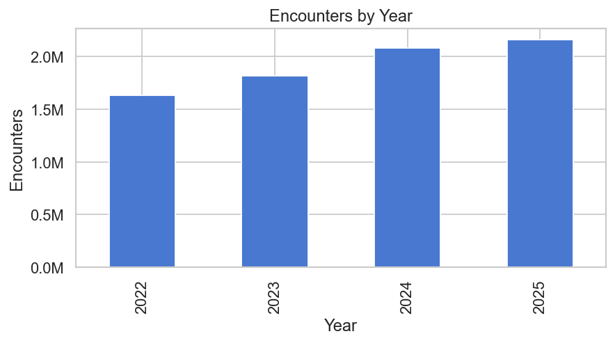
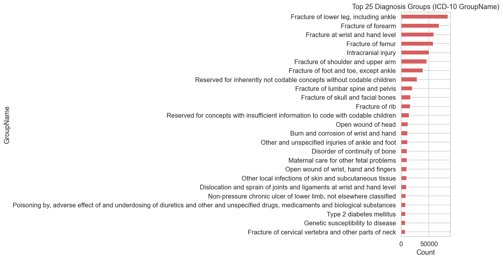
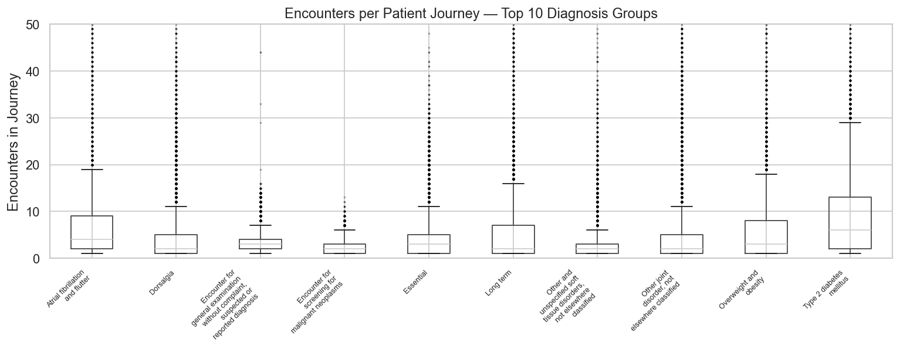
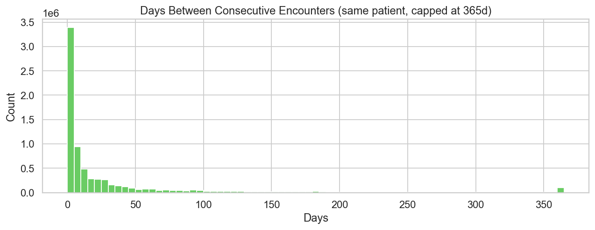
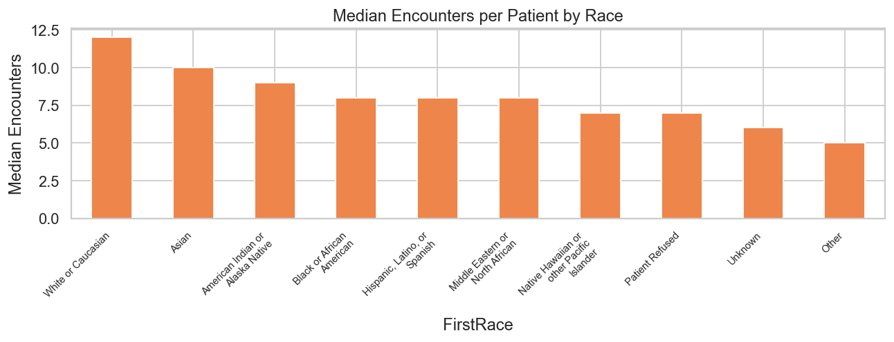
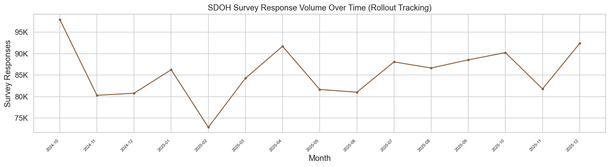

These visuals are the backbone of the recommendation narrative. Use them to show that the strategy themes come directly from the data rather than from generic healthcare advice.

Establishes the operational relevance of any workflow recommendation.

Provides a clinically coherent anchor for the strategy.

Shows that patient pathways vary sharply by diagnosis group.

The strongest evidence for missed-care or delayed-care intervention design.

Keep subgroup comparisons at the patient level, not raw encounter totals.

Shows why SDOH should be framed as a screened subset rather than full-population evidence.